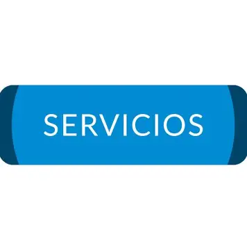

Creemos que la moda va más allá de las tendencias:
- Una forma de expresión, una herramienta de identidad y un puente entre lo que somos y lo que proyectamos. Nuestra filosofía nace del compromiso con cada persona que entra en nuestra tienda buscando algo más que una prenda: busca sentirse bien, verse bien y conectar con su estilo auténtico. Por eso, no solo vendemos jeans; diseñamos experiencias, construimos confianza y cultivamos relaciones duraderas con nuestros clientes.
- Cada jean que ofrecemos está pensado para adaptarse a cuerpos reales, a vidas reales y a momentos únicos.
- Trabajamos con materiales resistentes, diseños versátiles y procesos responsables, porque creemos que la calidad no debe ser negociable y que el respeto por el cliente empieza por ofrecerle lo mejor. Nos apasiona escuchar, entender y acompañar, brindando asesoría personalizada, servicios flexibles y atención humana en cada paso del camino.
- Nuestra filosofía también se extiende al impacto que queremos generar: promovemos el consumo consciente, la moda sostenible y el apoyo a comunidades locales. Creemos en el poder de la colaboración, en la importancia de educar sobre el valor de lo bien hecho y en la necesidad de construir una industria textil más ética, inclusiva y transparente. Por eso, participamos en campañas de reciclaje, donación de ropa, formación de emprendedores y eventos que celebran la diversidad y la creatividad.
- En Jeans Para Ti, cada decisión que tomamos está guiada por un propósito claro: vestir con sentido, servir con pasión y crecer junto a quienes confían en nosotros. Porque sabemos que un buen jean puede transformar un día, una actitud o una historia. Y si logramos que cada cliente se sienta cómodo, seguro y representado, entonces estamos cumpliendo nuestra misión. Ese es nuestro lema, nuestro motor y nuestra forma de entender la moda: como una experiencia que empodera, conecta y deja huella.